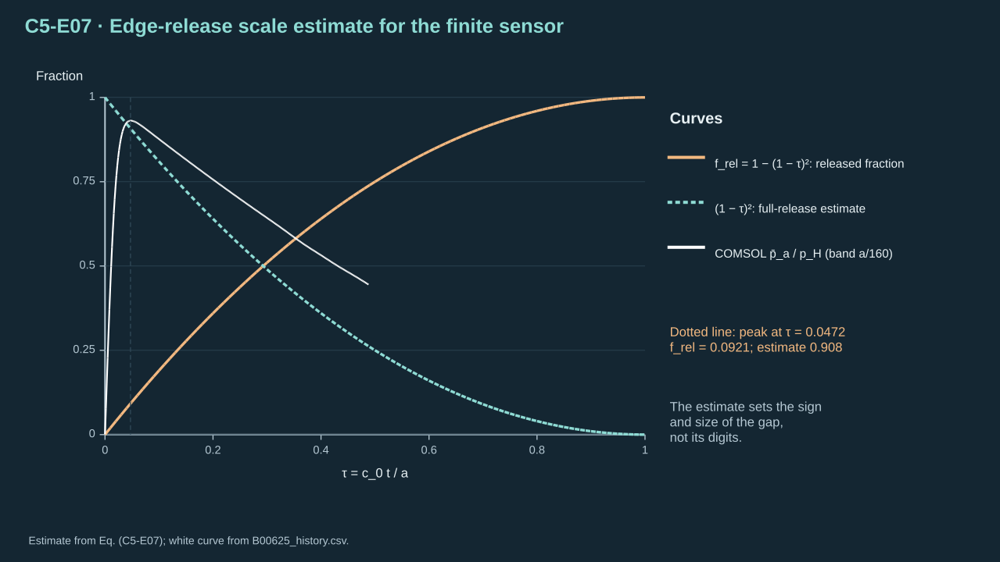
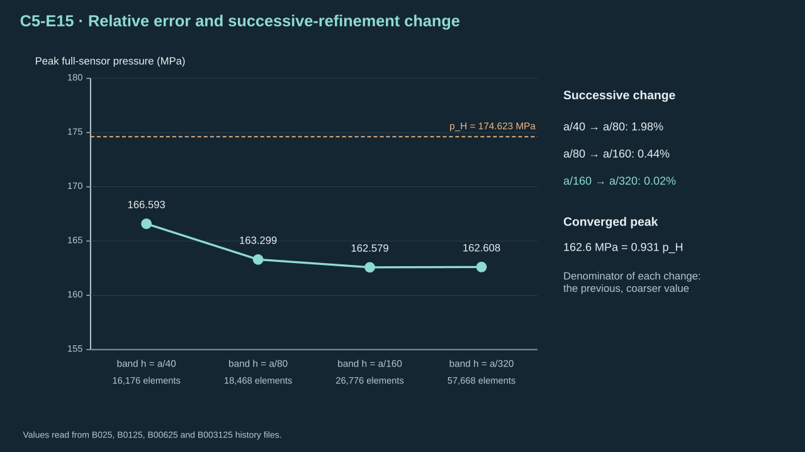
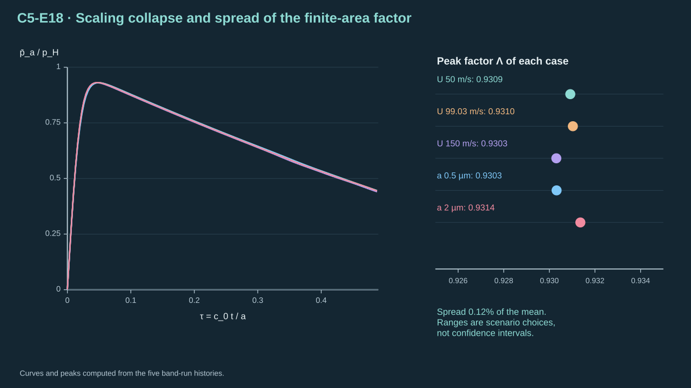
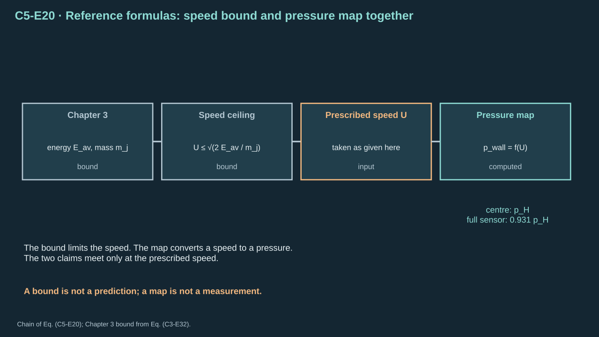

Find the pressure that a liquid jet of prescribed speed exerts on a rigid wall. Follow three links in order. Theory gives a closed-form reference. A one-dimensional finite-volume code calculates the planar history. An axisymmetric COMSOL model verifies the finite jet.
Fix the coordinates first. The rigid wall lies at z=0. The liquid occupies z>0 and moves toward −z. The radial coordinate r measures distance from the jet axis. Time t=0 is the first contact of the liquid front with the wall. The jet radius a and the incoming speed U are supplied.
先固定坐标。刚性壁面位于 z=0。液体占据 z>0 并朝 −z 运动。径向坐标 r 为到射流轴线的距离。时间 t=0 为液体前沿首次接触壁面的时刻。射流半径 a 与入射速度 U 为给定值。
State the assumptions. The liquid is the only phase. There is no gas cushion, splash, wall elasticity or cavitation. The wall is flat, rigid and frictionless. The jet side is free, so its pressure is released to the reference pressure pj. Only the first arrival is modelled, up to about one sound-crossing time of the jet radius.
Chapter 3 bounds the speed a source can give a finite jet. This chapter maps a given speed to a wall pressure. Whether a real source reaches that speed is not decided here. Physical validation against an experiment: Not established. Missing: a measured wall pressure for a real jet.
Radius of the liquid column; also the length scale of the wall sensor.
液柱半径；也是壁面传感区的长度尺度。
U
Prescribed impact speed
给定撞击速度
m s⁻¹
Uniform speed of the incoming liquid toward the wall; supplied, not predicted.
入射液体朝壁面的均匀速度；为给定值而非预测值。
z
Axial coordinate from the wall
距壁面的轴向坐标
m
z = 0 is the rigid wall; the liquid lies at z > 0 and moves toward −z.
z = 0 为刚性壁面；液体位于 z > 0 并朝 −z 运动。
r
Radial coordinate
径向坐标
m
Distance from the jet axis in the axisymmetric model.
轴对称模型中到射流轴线的距离。
t
Time from first contact
自首次接触起的时间
s
Zero when the liquid front first touches the wall.
液体前沿首次接触壁面时为零。
ρ
Liquid density
液体密度
kg m⁻³
Field variable; equals ρj at the reference pressure.
场变量；在参考压力下等于 ρj。
ρj
Reference liquid density
参考液体密度
kg m⁻³
998.1539919 kg m⁻³ at pj; the incoming jet state.
在 pj 下为 998.1539919 kg m⁻³；入射射流状态。
p
Absolute pressure
绝对压力
Pa
Pressure field; excess pressure is p − pj.
压力场；超压为 p − pj。
pj
Reference pressure
参考压力
Pa
101325 Pa; pressure of the undisturbed jet and of the released side.
101325 Pa；未扰动射流及侧向释放边界的压力。
γ
Stiffness exponent
刚度指数
1
4.4 in the adopted stiffened-gas law.
所采用刚化气体律中的 4.4。
Π
Stiffness pressure
刚度压力
Pa
6.00 × 10⁸ Pa; sets the liquid compressibility together with γ.
6.00 × 10⁸ Pa；与 γ 共同决定液体可压缩性。
c
Local sound speed
局部声速
m s⁻¹
Equals dp/dρ under the square root; varies with pressure.
根号内 dp/dρ 的结果；随压力变化。
c0
Reference sound speed
参考声速
m s⁻¹
1626.447 m s⁻¹ at the reference state.
参考状态下为 1626.447 m s⁻¹。
Z0
Reference acoustic impedance
参考声阻抗
Pa s m⁻¹
Product ρjc0; the Chapter 3 liquid impedance at the reference state.
乘积 ρjc0；第三章在参考状态下的液体阻抗。
M
Impact Mach number
撞击马赫数
1
U/c0; measures how far the jump is from the linear limit.
U/c0；衡量跳跃偏离线性极限的程度。
Us
Shock speed relative to the incoming liquid
相对入射液体的激波速度
m s⁻¹
Speed at which the compressed region grows into the arriving liquid.
受压区域向入射液体推进的速度。
x
Velocity ratio across the shock
激波两侧速度比
1
U/Us; equals the fractional density jump 1 − ρj/ρ1.
U/Us；等于密度相对跃升 1 − ρj/ρ1。
pH
Hugoniot wall pressure
Hugoniot 壁面压力
Pa
Planar, fully confined shock pressure from the energy-conserving jump; the reference.
来自能量守恒跳跃的平面完全受限激波压力；作为参照。
pB
Barotropic shock pressure
正压激波压力
Pa
Planar shock pressure under the barotropic law used by both solvers.
两个求解器所用正压律下的平面激波压力。
pˉR
Area-weighted wall pressure
面积加权壁面压力
Pa
Mean of p over the wall disk r ≤ R; R = a is the full sensor, R = a/2 the centre.
p 在壁面圆盘 r ≤ R 上的平均；R = a 为全传感区，R = a/2 为中心区。
τ
Dimensionless time
无量纲时间
1
c0 t / a; one unit is the time for sound to cross the jet radius.
c0 t / a；一个单位为声波穿过射流半径的时间。
Λ
Finite-area peak factor
有限面积峰值因子
1
Peak of the full-sensor mean divided by pH.
全传感区平均峰值与 pH 之比。
K˙
Incident kinetic-energy flux
入射动能通量
W
½ ρj U³ π a²; liquid energy crossing a plane, not work on the wall.
½ ρj U³ π a²；穿过平面的液体能量，并非对壁面做功。
m˙
Incident mass flow rate
入射质量流率
kg s⁻¹
ρj U π a²; mass crossing the observation plane per unit time.
ρj U π a²；单位时间穿过观察平面的质量。
ε
Relative error
相对误差
1
Absolute difference divided by the stated reference value.
绝对差除以所注明的参考值。
2. Theory: the liquid law and the acoustic limit
2. 理论：液体律与声学极限
Step 1 — Adopt a pressure law that depends on density alone. Eq. (C5-E01) is the stiffened-gas form. It is an adopted constitutive law, not a derivation from first principles. [R17] Both solvers below integrate this same law.
ρj — Reference density 998.1539919 at the reference pressure (kg m⁻³)
ρj — 参考压力下的参考密度 998.1539919（kg m⁻³）
pj — Reference pressure 101325 (Pa)
pj — 参考压力 101325（Pa）
Π — Stiffness pressure 6.00 × 10⁸ (Pa)
Π — 刚度压力 6.00 × 10⁸（Pa）
γ — Stiffness exponent 4.4 (dimensionless)
γ — 刚度指数 4.4（无量纲）
c — Local sound speed (m s⁻¹)
c — 局部声速（m s⁻¹）
c0 — Reference sound speed (m s⁻¹)
c0 — 参考声速（m s⁻¹）
d/dρ — Derivative operator with respect to density (m³ kg⁻¹)
d/dρ — 对密度的导数算符（m³ kg⁻¹）
Conventions and conditions. Pressure depends on density alone (barotropic); Valid while temperature change is negligible; The law fixes c0 = 1626.447 m s⁻¹.
约定与条件。 压力仅依赖于密度（正压）；温度变化可忽略时成立；该律给出 c0 = 1626.447 m s⁻¹。
(C5-E01) · Adopted barotropic stiffened-gas law and exact sound speed
One density-only law fixes pressure and sound speed for every later step.
一条仅含密度的状态律为后续每一步确定压力与声速。
Step 2 — Differentiate the law. The factor (ρ/ρj)γ gives dp/dρ=γ(pj+Π)ργ−1/ρjγ. Replace (pj+Π)(ρ/ρj)γ by p+Π. This gives c2=γ(p+Π)/ρ. At the reference state, c02=4.4×6.00101325×108/998.1539919. Hence c0=1626.447 m s⁻¹. The check is dimensional: pressure over density is a squared speed.
Step 3 — Take the rigid-wall limit of the Chapter 3 contact pressure. Chapter 3 matched liquid and receiver impedances and found the early pressure of Eq. (C3-E24). A rigid wall has Zr→∞. The common contact velocity then tends to zero. The pressure tends to Z0U with Z0=ρjc0=1.6234×106 Pa s m⁻¹. The opposite limit Zr→0 gives zero pressure, as a free surface should.
步骤 3——取第三章接触压力的刚性壁面极限。第三章匹配了液体与接收体的阻抗，得到式（C3-E24）的早期压力。刚性壁面有 Zr→∞。共同接触速度趋于零，压力趋于 Z0U，其中 Z0=ρjc0=1.6234×106 Pa s m⁻¹。相反的极限 Zr→0 给出零压力，符合自由面。
Symbols before Eq. (C5-E02).
式（C5-E02）前的符号定义。
First individual definition第一项单独定义
Second individual definition第二项单独定义
pearly — Early compressive contact pressure from Chapter 3 matching (Pa)
pearly — 第三章匹配得到的早期压缩接触压力（Pa）
Zl — Liquid longitudinal impedance (Pa s m⁻¹)
Zl — 液体纵向阻抗（Pa s m⁻¹）
Zr — Receiver longitudinal impedance (Pa s m⁻¹)
Zr — 接收体纵向阻抗（Pa s m⁻¹）
U — Prescribed incoming speed 99.027 (m s⁻¹)
U — 给定入射速度 99.027（m s⁻¹）
Z0 — Reference acoustic impedance ρjc0 (Pa s m⁻¹)
Z0 — 参考声阻抗 ρjc0（Pa s m⁻¹）
pA — Absolute acoustic wall pressure (Pa)
pA — 绝对声学壁面压力（Pa）
pj — Reference pressure (Pa)
pj — 参考压力（Pa）
ρj — Reference density (kg m⁻³)
ρj — 参考密度（kg m⁻³）
c0 — Reference sound speed (m s⁻¹)
c0 — 参考声速（m s⁻¹）
Conventions and conditions.Zl = Z0 at linear order; Rigid wall: Zr → ∞ gives zero contact velocity; Z0 U = 160.765 MPa at U = 99.027 m s⁻¹.
约定与条件。 线性阶下 Zl = Z0；刚性壁面：Zr → ∞ 使接触速度为零；U = 99.027 m s⁻¹ 时 Z0 U = 160.765 MPa。
(C5-E02) · Rigid-wall limit of the Chapter 3 acoustic matching
Letting the receiver impedance grow without bound turns the Chapter 3 contact pressure into ρc times speed.
令接收体阻抗趋于无穷，第三章的接触压力变为 ρc 乘速度。
At U=99.027 m s⁻¹ the excess pressure Z0U is 160.765 MPa. The absolute value pA is 160.867 MPa. This is a linear estimate. It holds for U/c0≪1. The next section removes that restriction.
3. Theory: the stopping shock and the Hugoniot pressure
3. 理论：停止激波与 Hugoniot 压力
Step 4 — Describe the stopping shock. At first contact a shock leaves the wall and travels toward +z at lab speed S. Liquid behind it is at rest against the wall. Liquid ahead of it moves toward the wall at speed U. Its speed relative to the incoming liquid is Us=U+S. Work in the frame of the shock. Liquid enters at speed Us and leaves at speed S=Us−U.
步骤 4——描述停止激波。首次接触时，激波离开壁面，以实验室速度 S 朝 +z 传播。激波后的液体相对壁面静止，激波前的液体以速度 U 朝壁面运动。它相对入射液体的速度为 Us=U+S。取激波参考系：液体以速度 Us 流入，以速度 S=Us−U 流出。
Mass balance across the front gives ρjUs=ρ1S. Momentum balance gives pj+ρjUs2=p1+ρ1S2. Substitute ρ1S=ρjUs into the second relation. Then p1−pj=ρjUs(Us−S)=ρjUsU. These are the two relations of Eq. (C5-E03). They are exact for a planar steady shock and need no equation of state. [R16]
Us — Shock speed relative to the incoming liquid (m s⁻¹)
Us — 相对入射液体的激波速度（m s⁻¹）
U — Incoming liquid speed toward the wall (m s⁻¹)
U — 入射液体朝壁面的速度（m s⁻¹）
p1 — Absolute pressure behind the shock (Pa)
p1 — 激波后绝对压力（Pa）
pj — Absolute pressure ahead of the shock (Pa)
pj — 激波前绝对压力（Pa）
x — Velocity ratio U/Us (dimensionless)
x — 速度比 U/Us（无量纲）
Conventions and conditions. Liquid behind the shock is at rest against the wall; Mass and momentum jump conditions need no equation of state; In the frame of the shock the incoming speed is Us and the outgoing speed is Us − U.
A shock that stops the liquid obeys mass and momentum balance across its thin front.
使液体停止的激波，其薄波前两侧服从质量与动量平衡。
Step 5 — Close the jump with energy conservation. The specific internal energy of the stiffened-gas liquid is e=(p+γΠ)/[(γ−1)ρ]. Energy conservation across the shock requires e1−ej=21(p1+pj)(1/ρj−1/ρ1). Write ρ1=ρj/(1−x) with x=U/Us. Put Δ=p1−pj and B=pj+γΠ. Multiply the energy relation by (γ−1)ρj. It becomes Δ(1−x)−Bx=21(γ−1)x(2pj+Δ).
Collect the terms in Δ. Then Δ[1−(γ+1)x/2]=γ(pj+Π)x. Momentum gives Δ=ρjU2/x. Insert it and use c02=γ(pj+Π)/ρj. The result is x2+21(γ+1)M2x−M2=0 with M=U/c0. Its positive root is x=−k+k2+M2 with k=(γ+1)M2/4. The Hugoniot pressure follows as pH=pj+ρjU2/x. [R16]
Energy conservation closes the jump and gives one closed-form reference pressure.
能量守恒使跳跃条件封闭，并给出唯一的封闭形式参照压力。
Check the limits and the number. For M→0, x→M and pH→pj+ρjc0U, which is Eq. (C5-E02). At U=99.02724 m s⁻¹, M=0.060886, k=0.0050046 and x=0.056086. Hence Us=1765.62 m s⁻¹, ρ1/ρj=1.0594 and pH=174.6229 MPa. A separate bisection on the energy residual in the C++ code gives the same 174.622895 MPa.
检验极限与数值。当 M→0 时，x→M，pH→pj+ρjc0U，即式（C5-E02）。在 U=99.02724 m s⁻¹ 时，M=0.060886，k=0.0050046，x=0.056086。于是 Us=1765.62 m s⁻¹，ρ1/ρj=1.0594，pH=174.6229 MPa。C++ 程序对能量残差另作二分求根，得到相同的 174.622895 MPa。
Step 6 — Keep the density-only law and drop the energy equation. This is the model that both solvers integrate. Mass and momentum still give ρ1=ρj(U+S)/S and p1−pj=ρj(U+S)U. The law of Eq. (C5-E01) must also give p1 at the density ρ1. Solve this condition for the root SB.
Us — Shock speed relative to the incoming liquid (m s⁻¹)
Us — 相对入射液体的激波速度（m s⁻¹）
p(ρ1) — Pressure from the law of Eq. (C5-E01) at density ρ1 (Pa)
p(ρ1) — 由式（C5-E01）在密度 ρ1 处给出的压力（Pa）
pj — Incoming pressure (Pa)
pj — 入射压力（Pa）
pB — Barotropic shock pressure (Pa)
pB — 正压激波压力（Pa）
Conventions and conditions. Mass and momentum are kept; the energy equation is dropped; SB solves p(ρ1) = pj + ρj(U+S)U; This is the law both solvers integrate.
Replacing the energy equation by the density-only law shifts the planar pressure by a fraction of a percent.
以仅含密度的定律替代能量方程，使平面压力改变不足百分之一。
At the nominal speed SB=1661.86 m s⁻¹ and pB=174.155 MPa. This lies 0.268% below pH. The gap is the effect of dropping the energy equation. The acoustic estimate of Eq. (C5-E02) lies 7.9% below pH in absolute pressure. The nonlinear factor is (pH−pj)/(Z0U)=Us/c0=1.0856.
4. Theory: the finite sensor, edge release and scales
4. 理论：有限传感区、边缘释放与尺度
Step 7 — Define what is measured. The planar result of Section 3 holds under a column that fills the wall. A real jet has a free side from the first instant. Report the wall pressure as a mean over a fixed disk. Eq. (C5-E06) uses the axisymmetric area weight 2rdr/R2. The disk radius R is a for the full sensor and a/2 for the centre. This follows the fixed-observer rule of Eq. (C3-E26).
步骤 7——定义被测量。第 3 节的平面结果适用于充满壁面的液柱。真实射流自首次接触起就有自由侧边。将壁面压力报告为固定圆盘上的平均值。式（C5-E06）采用轴对称面积权重 2rdr/R2。圆盘半径 R 对全传感区取 a，对中心区取 a/2。这遵循式（C3-E26）的固定观测量规则。
Symbols before Eq. (C5-E06).
式（C5-E06）前的符号定义。
First individual definition第一项单独定义
Second individual definition第二项单独定义
pˉR — Area-weighted mean absolute pressure on the wall disk (Pa)
pˉR — 壁面圆盘上的面积加权平均绝对压力（Pa）
R — Sensor radius, a or a/2 (m)
R — 传感区半径，取 a 或 a/2（m）
p(r,0,t) — Wall pressure at radius r, z = 0 (Pa)
p(r,0,t) — 半径 r、z = 0 处的壁面压力（Pa）
r — Radial coordinate (m)
r — 径向坐标（m）
a — Jet radius (m)
a — 射流半径（m）
t — Time from first contact (s)
t — 自首次接触起的时间（s）
τ — Dimensionless time c0 t / a (dimensionless)
τ — 无量纲时间 c0 t / a（无量纲）
c0 — Reference sound speed (m s⁻¹)
c0 — 参考声速（m s⁻¹）
Λ — Finite-area peak factor (dimensionless)
Λ — 有限面积峰值因子（无量纲）
pH — Hugoniot wall pressure (Pa)
pH — Hugoniot 壁面压力（Pa）
Conventions and conditions. The weight 2r/R² is the area element of an axisymmetric disk; A line average along r without that weight is a different observable; Peak is taken over the first-arrival window.
约定与条件。 权重 2r/R² 是轴对称圆盘的面积微元；沿 r 不带该权重的线平均是另一个观测量；峰值取自首次到达时间窗。
(C5-E06) · Area-weighted wall observer and dimensionless time
The reported wall pressure is a mean over a fixed disk with area weights.
所报告的壁面压力是固定圆盘上带面积权重的平均值。
Step 8 — Estimate the effect of the free side. Pressure release starts at the edge r=a at first contact. Let it advance inward at c0. After the dimensionless time τ=c0t/a it has reached the annulus a(1−τ)<r≤a. The fraction of the disk area in that annulus is frel=1−(1−τ)2. If the annulus keeps no excess pressure and the core keeps pH, the mean falls to pH(1−τ)2. This is a scale estimate. It fixes the sign and size of the gap, not its value.
frel — Fraction of the wall disk reached by edge release (dimensionless)
frel — 边缘释放已到达的壁面圆盘面积分数（无量纲）
τ — Dimensionless time c0 t / a (dimensionless)
τ — 无量纲时间 c0 t / a（无量纲）
pˉa — Full-sensor mean wall pressure (Pa)
pˉa — 全传感区平均壁面压力（Pa）
pH — Hugoniot wall pressure (Pa)
pH — Hugoniot 壁面压力（Pa）
a — Jet radius (m)
a — 射流半径（m）
c0 — Sound speed carrying the release inward (m s⁻¹)
c0 — 向内传播释放的声速（m s⁻¹）
Conventions and conditions. Order-of-magnitude scale, not a prediction; Assumes a release front advancing inward at c0 from r = a; Pressure inside the front is taken equal to pH.
约定与条件。 数量级尺度估计，并非预测；假设释放前沿自 r = a 起以 c0 向内推进；前沿内部压力取为 pH。
(C5-E07) · Edge-release scale estimate for the finite sensor
有限传感区的边缘释放尺度估计
frel(τ)pHpˉa(τ)=1−(1−τ)2,0≤τ≤1,≈1−frel(τ)=(1−τ)2if the released annulus keeps no excess pressure.

Because the jet edge is free from first contact, an annulus relaxes while the core holds p_H.
射流边缘自首次接触起即为自由面，环带松弛而核心仍保持 p_H。
Step 9 — Count the energy that crosses a plane upstream of the wall. The plane z=2a is hit by the incident liquid before the reflected shock arrives. The reflected shock needs about 2a/(Us−U)=1.20 ns to climb back for a=1 μm. Use the window tw=1 ns. The kinetic-energy flux K˙=21ρjU3πa2 is 1.5226 mW. Energy through the plane in 1 ns is 1.5226 pJ. This is liquid energy crossing a plane. A rigid wall does no work on the liquid, so it receives none.
K — Kinetic energy crossing the plane up to time t (J)
K — 截至时间 t 穿过平面的动能（J）
ρj — Incoming density (kg m⁻³)
ρj — 入射密度（kg m⁻³）
U — Incoming speed (m s⁻¹)
U — 入射速度（m s⁻¹）
tw — Incident-flux window (s)
tw — 入射通量时间窗（s）
Us — Shock speed relative to the incoming liquid (m s⁻¹)
Us — 相对入射液体的激波速度（m s⁻¹）
Conventions and conditions. Plane z = 2a lies upstream of the wall; The window ends before the reflected shock reaches the plane; Flux is liquid energy crossing the plane; the rigid wall receives no work.
约定与条件。 平面 z = 2a 位于壁面上游；时间窗在反射激波到达该平面之前结束；通量是穿过平面的液体能量；刚性壁面不接收功。
(C5-E08) · Incident mass and kinetic-energy flux through the observation plane
The energy delivered to the plane is a kinetic-energy flux times the window, which bounds nothing at the wall.
到达平面的能量等于动能通量乘以时间窗，它并不约束壁面。
Step 10 — State the validity range. The nominal Mach number is M=0.0609. The tested range is 0.031≤M≤0.092. The sound-crossing time of the jet radius is a/c0=0.615 ns for a=1 μm. The compression behind the shock is only 5.9%. That is why the barotropic law stays within 0.27% of the energy law. No conclusion is claimed outside this range.
ρ1/ρj — Compression ratio behind the shock (dimensionless)
ρ1/ρj — 激波后压缩比（无量纲）
x — Velocity ratio at U = 99.027 m s⁻¹ (dimensionless)
x — U = 99.027 m s⁻¹ 时的速度比（无量纲）
pH — Hugoniot pressure (Pa)
pH — Hugoniot 压力（Pa）
pB — Barotropic pressure (Pa)
pB — 正压压力（Pa）
Conventions and conditions. Tested range of M is 0.031 to 0.092; a = 1 μm gives ta = 0.615 ns; Compression of 5.9% keeps the barotropic law close to the energy law.
Small Mach number and small compression are what let a barotropic liquid stand in for the full energy law.
小马赫数与小压缩，使正压液体可以替代完整能量律。
5. Calculation: the one-dimensional reference solver
5. 计算：一维参考求解器
Step 11 — Write the planar problem as conservation laws. Eq. (C5-E10) holds mass and momentum in conservative form. Conservative form lets a shock form and move at the correct speed. The wall is a mirrored state with u=0. The inflow boundary holds the state (ρj,−U). The initial state is the uniform inflow state.
Mass and momentum in conservative form let a shock form and travel at the correct speed.
守恒形式的质量与动量方程使激波得以形成并以正确速度传播。
Step 12 — Discretize with a dissipative flux and a two-stage time step. Cell size is Δz=H/N=4μm/4000=1 nm. The face flux averages the two physical fluxes and subtracts α/2 times the state jump. The speed α is the larger value of ∣u∣+c on the two sides. [R19][R18] The Heun step is a predictor followed by the average of two spatial operators. It is second order in time and first order in space.
Q — Vector of conserved variables ρ and ρu (kg m⁻³; kg m⁻² s⁻¹)
Q — 守恒变量向量 ρ 与 ρu（kg m⁻³; kg m⁻² s⁻¹）
F — Physical flux vector (kg m⁻² s⁻¹; Pa)
F — 物理通量向量（kg m⁻² s⁻¹; Pa）
N — Number of cells, 4000 (dimensionless)
N — 网格单元数，4000（无量纲）
H — Column length 4 μm (m)
H — 液柱长度 4 μm（m）
Δz — Cell size H/N, 1 nm (m)
Δz — 单元尺寸 H/N，1 nm（m）
Fi+21 — Numerical flux at the face between cells i and i+1 (kg m⁻² s⁻¹; Pa)
Fi+21 — 单元 i 与 i+1 之间界面的数值通量（kg m⁻² s⁻¹; Pa）
QL — State left of the face (kg m⁻³; kg m⁻² s⁻¹)
QL — 界面左侧状态（kg m⁻³; kg m⁻² s⁻¹）
QR — State right of the face (kg m⁻³; kg m⁻² s⁻¹)
QR — 界面右侧状态（kg m⁻³; kg m⁻² s⁻¹）
α — Largest local wave speed (Rusanov) (m s⁻¹)
α — 最大局部波速（Rusanov）（m s⁻¹）
cL — Sound speed of Eq. (C5-E01) left of the face (m s⁻¹)
cL — 界面左侧由式（C5-E01）给出的声速（m s⁻¹）
cR — Sound speed of Eq. (C5-E01) right of the face (m s⁻¹)
cR — 界面右侧由式（C5-E01）给出的声速（m s⁻¹）
L — Spatial operator −∂_z F discretized by the face fluxes (kg m⁻³ s⁻¹; Pa m⁻¹)
L — 由界面通量离散的空间算子 −∂_z F（kg m⁻³ s⁻¹; Pa m⁻¹）
Δt — Time step 0.4 Δz / (U + 1.2 cwall) (s)
Δt — 时间步 0.4 Δz / (U + 1.2 cwall)（s）
Q∗ — Predictor state (kg m⁻³; kg m⁻² s⁻¹)
Q∗ — 预测态（kg m⁻³; kg m⁻² s⁻¹）
Qn — Old state (kg m⁻³; kg m⁻² s⁻¹)
Qn — 旧状态（kg m⁻³; kg m⁻² s⁻¹）
Qn+1 — New state (kg m⁻³; kg m⁻² s⁻¹)
Qn+1 — 新状态（kg m⁻³; kg m⁻² s⁻¹）
Conventions and conditions. First-order in space, second-order in time (Heun); Dissipation scales with α, so shocks stay stable; Face fluxes at the wall use a mirrored ghost state.
A simple dissipative flux and a two-stage time step are enough to carry the shock to the wall.
简单的耗散通量与两步时间推进足以把激波推进到壁面。
Step 13 — Read the planar reference. Run the code for the confined column at U=99.02724 m s⁻¹. Average the wall pressure over 0.2 to 2 ns. Compare it with the exact planar pressures. Every entry names its reference value.
The C++ plateau agrees with the barotropic shock to 0.004%. This is the check that the discretization reproduces its own exact law. The remaining 0.27% to pH is the energy equation that the model omits.
C++ 平台与正压激波的偏差为 0.004%。这检验了离散格式再现了它自身的精确定律。与 pH 相差的 0.27% 来自模型舍去的能量方程。
6. Verification: the COMSOL axisymmetric model
6. 核验：COMSOL 轴对称模型
Step 14 — State the finite-element model. It is a compressible laminar-flow study in axisymmetric (r,z) coordinates. Eq. (C5-E12) adds radial motion and a small viscosity to the same liquid. The density follows the pressure through the inverse of Eq. (C5-E01). There is no gas phase.
u — Velocity vector with components (ur, w) (m s⁻¹)
u — 速度向量，分量为 (ur, w)（m s⁻¹）
p — Absolute pressure (Pa)
p — 绝对压力（Pa）
μ — Dynamic viscosity 1 mPa s (Pa s)
μ — 动力黏度 1 mPa s（Pa s）
I — Identity tensor (dimensionless)
I — 单位张量（无量纲）
ρj — Reference density (kg m⁻³)
ρj — 参考密度（kg m⁻³）
pj — Reference pressure (Pa)
pj — 参考压力（Pa）
Π — Stiffness pressure of Eq. (C5-E01) (Pa)
Π — 式（C5-E01）的刚度压力（Pa）
γ — Stiffness exponent of Eq. (C5-E01) (dimensionless)
γ — 式（C5-E01）的刚度指数（无量纲）
∇ — Gradient in axisymmetric (r, z) coordinates (m⁻¹)
∇ — 轴对称 (r, z) 坐标中的梯度（m⁻¹）
T — Transpose (dimensionless)
T — 转置（无量纲）
Conventions and conditions. Axisymmetric compressible laminar flow, no gas phase; Density follows pressure through the inverse of Eq. (C5-E01); Viscosity is small and does not set the plateau.
The finite-element model solves the same liquid with radial motion and a small viscosity added.
有限元模型求解同一种液体，并增加径向运动与很小的黏性。
Step 15 — Set the boundaries and the initial state. The domain is 0≤r≤a and 0≤z≤4a. The wall is a slip wall. The inflow boundary carries the speed U. The side boundary is an outlet at pj, which creates the free side. The liquid starts with a thin onset layer w=−Utanh(z/δ), δ=0.02a, so that the wall holds it at rest at t=0.
Conventions and conditions. Domain r from 0 to a and z from 0 to 4a; The release side stands for a free jet surface; Axisymmetric normals are nr and nz.
A free side and a rigid slip wall are the only boundaries that change the planar picture.
自由侧边与刚性滑移壁面是仅有的改变平面图景的边界。
Step 16 — Fix the observers before the comparison. Eq. (C5-E14) defines the transport observers at the plane z=2a and the area-weighted wall pressure at z=0. The same integrals serve every mesh and every case. Mass flux and kinetic-energy flux through the plane check the prescribed inflow. The mass-flux-weighted incident speed over 0 to 1 ns is 99.0272 m s⁻¹, which differs from U by less than 10−5 percent. The incident energy over the same window is 1.52258 pJ, which differs from Eq. (C5-E08) by less than 10−5 percent.
步骤 16——比较之前先固定观测量。式（C5-E14）定义了平面 z=2a 处的输运观测量与 z=0 处的面积加权壁面压力。同一组积分适用于每一种网格和每一个工况。穿过平面的质量通量与动能通量用于检验给定的入流。0 至 1 ns 内质量通量加权的入射速度为 99.0272 m s⁻¹，与 U 的偏差小于百分之 10−5。同一时间窗内的入射能量为 1.52258 pJ，与式（C5-E08）的偏差小于百分之 10−5。
Symbols before Eq. (C5-E14).
式（C5-E14）前的符号定义。
First individual definition第一项单独定义
Second individual definition第二项单独定义
m˙p — Computed mass flow through the plane (kg s⁻¹)
m˙p — 计算得到的穿过平面的质量流率（kg s⁻¹）
K˙p — Computed kinetic-energy flux through the plane (W)
K˙p — 计算得到的穿过平面的动能通量（W）
Uinc — Mass-flux-weighted incident speed (m s⁻¹)
Uinc — 质量通量加权的入射速度（m s⁻¹）
pˉR — Area-weighted wall pressure of Eq. (C5-E06) (Pa)
pˉR — 式（C5-E06）的面积加权壁面压力（Pa）
w — Axial velocity (m s⁻¹)
w — 轴向速度（m s⁻¹）
ur — Radial velocity (m s⁻¹)
ur — 径向速度（m s⁻¹）
ρ — Density (kg m⁻³)
ρ — 密度（kg m⁻³）
max(−w,0) — Positive part of the inward axial speed (m s⁻¹)
max(−w,0) — 朝壁面轴向速度的正部（m s⁻¹）
tw — Incident-flux window 1 ns (s)
tw — 入射通量时间窗 1 ns（s）
a — Jet radius (m)
a — 射流半径（m）
R — Sensor radius (m)
R — 传感区半径（m）
r — Radial coordinate (m)
r — 径向坐标（m）
Conventions and conditions. Integrals use the 2πr weight of the axisymmetric model; Only inward flux counts at the plane; These are the numbers that check the transport and the wall observer.
One set of fixed integrals defines every number reported from the finite-element model.
一组固定的积分定义了有限元模型报告的每个数值。
7. Verification: convergence, balances and the cross-check
7. 核验：收敛、平衡与交叉检验
Step 17 — Judge mesh convergence by the peak of the full-sensor mean. Global refinement beyond about 64,000 elements exceeds the available memory. The peak forms about 0.03 ns after contact and within about 0.05 a of the wall. So refine only a wall band r≤a, z≤0.15a and keep the rest of the mesh fixed. Eq. (C5-E15) defines the relative error and the successive change. The denominator of the change is the previous, coarser value.
步骤 17——以全传感区平均的峰值判断网格收敛。全局加密超过约 64,000 单元时超出可用内存。峰值在接触后约 0.03 ns、距壁面约 0.05 a 以内形成。因此仅加密壁面带 r≤a、z≤0.15a，其余网格保持不变。式（C5-E15）定义了相对误差与逐次变化量，变化量的分母为前一个较粗网格的值。
Symbols before Eq. (C5-E15).
式（C5-E15）前的符号定义。
First individual definition第一项单独定义
Second individual definition第二项单独定义
ε — Relative error (dimensionless)
ε — 相对误差（无量纲）
X — Computed quantity (units of the compared quantity)
X — 被评价的计算量（units of the compared quantity）
Xref — Stated reference value (units of the compared quantity)
Xref — 所注明的参考值（units of the compared quantity）
Δk — Successive change on refinement step k (dimensionless)
Δk — 第 k 次加密的相邻变化（无量纲）
Pˉk — Peak full-sensor wall pressure on band size hk (Pa)
Pˉk — 带宽 hk 上的全传感区壁面压力峰值（Pa）
pˉa — Full-sensor mean wall pressure (Pa)
pˉa — 全传感区平均壁面压力（Pa）
hk — Maximum element size in the wall band r ≤ a, z ≤ 0.15 a (m)
hk — 壁面加密带 r ≤ a、z ≤ 0.15 a 内的最大单元尺寸（m）
k — Refinement index, 1 to 4 (dimensionless)
k — 加密序号，取 1 至 4（无量纲）
Conventions and conditions. Every error names its reference value; Output spacing is 0.001 ns; The band is refined alone because global refinement exceeds memory.
(C5-E15) · Relative error and successive-refinement change
相对误差与逐次加密变化量
ε(X;Xref)Pˉk=∣Xref∣∣X−Xref∣,Δk=ε(Pˉk;Pˉk−1),=0≤t≤0.3nsmaxpˉa(t)on band size hk,hk=40a,80a,160a,320a.

Mesh convergence is judged by how little the peak moves when only the wall band is refined.
网格收敛以仅加密壁面带时峰值的变化量大小来判断。
Band size h
加密带尺寸 h
Elements
单元数
Peak full sensor (MPa)
全传感区峰值（MPa）
Change Δk
变化量 Δk
Peak / pH
峰值 / pH
Peak centre r≤a/2 (MPa)
中心区峰值 r≤a/2（MPa）
a/40
a/40
16,176
16,176
166.593
166.593
—
—
0.9540
0.9540
175.607
175.607
a/80
a/80
18,468
18,468
163.299
163.299
1.98%
1.98%
0.9352
0.9352
174.302
174.302
a/160
a/160
26,776
26,776
162.579
162.579
0.44%
0.44%
0.9310
0.9310
174.284
174.284
a/320
a/320
57,668
57,668
162.608
162.608
0.02%
0.02%
0.9312
0.9312
174.373
174.373
The successive changes fall from 1.98% to 0.44% and then to 0.02%. The converged full-sensor peak is 162.6 MPa. It is 0.931 of pH, that is 6.9% below the reference. The converged centre-disk peak is 174.37 MPa, 0.14% from pH.
Step 18 — Check the time step. A run with strict steps and relative tolerance 10−3 on the 16,136-element mesh gives a full-sensor peak of 168.106 MPa. The automatic-step run gives 169.359 MPa. They differ by 0.74% of the automatic value. A time-step study at the finest band is not done.
Step 19 — Audit the conservation laws. Close the column on the sides so nothing leaves sideways. Eq. (C5-E16) then compares the change of axial momentum and of mass with their own boundary integrals over 0 to 3 ns. The momentum residual is 0.106% and the mass residual is 0.018%. These residuals test the solver, not the physics.
Pz — Axial momentum of the liquid in the domain (kg m s⁻¹)
Pz — 计算域内液体的轴向动量（kg m s⁻¹）
Fwall — Pressure force on the wall, ∫ p dA (N)
Fwall — 壁面压力，∫ p dA（N）
Ftop — Inflow pressure force plus momentum flux, ∫(p + ρw²) dA (N)
Ftop — 入流压力加动量通量，∫(p + ρw²) dA（N）
M — Liquid mass in the domain (kg)
M — 计算域内液体质量（kg）
m˙top — Net mass flow into the domain through the top (kg s⁻¹)
m˙top — 经顶部净流入计算域的质量流率（kg s⁻¹）
V — Domain volume (axisymmetric) (m³)
V — 计算域体积（轴对称）（m³）
eP — Momentum balance residual (dimensionless)
eP — 动量平衡残差（无量纲）
eM — Mass balance residual (dimensionless)
eM — 质量平衡残差（无量纲）
t — Current time (s)
t — 当前时间（s）
t′ — Integration variable (s)
t′ — 积分变量（s）
w — Axial velocity (m s⁻¹)
w — 轴向速度（m s⁻¹）
Conventions and conditions. Confined case: side wall set to slip so nothing leaves sideways; Forces are signed with +z positive; Balance is checked over 0 to 3 ns.
Integrating forces and flows over the event must reproduce the change in momentum and mass.
对整个事件的力与流量积分，必须再现动量与质量的变化。
Step 20 — Compare the two solvers on the same problem. Both integrate the confined planar column with the same law, inputs, wall and inflow. Interpolate the C++ history onto the 361 COMSOL sample times between 0.2 and 2.0 ns. Eq. (C5-E17) gives a relative L2 difference of 0.034% and a largest pointwise difference of 0.096%. The plateaus are 174.205 MPa (COMSOL) and 174.148 MPa (C++), a difference of 0.032%. The COMSOL plateau lies 0.24% below pH and 0.028% above pB.
δ2 — Relative L2 difference of the two wall histories (dimensionless)
δ2 — 两条壁面压力历程的相对 L2 差（无量纲）
δ∞ — Largest pointwise relative difference (dimensionless)
δ∞ — 最大逐点相对差（无量纲）
pmC — COMSOL wall pressure at sample m (Pa)
pmC — 样本 m 处的 COMSOL 壁面压力（Pa）
pmX — C++ wall pressure interpolated to the same time (Pa)
pmX — 线性插值到同一时刻的 C++ 壁面压力（Pa）
Ns — Number of common samples, 361 (dimensionless)
Ns — 共同样本数，361（无量纲）
m — Sample index (dimensionless)
m — 样本序号（无量纲）
pˉpl — Plateau pressure, mean over the window (Pa)
pˉpl — 压力平台，窗口内平均（Pa）
tm — Sample time spaced by 5 ps (s)
tm — 间隔 5 ps 的样本时间（s）
Conventions and conditions. Both solvers use the same law, inputs, wall and inflow; The window starts after the arrival transient; Agreement tests the implementation of one model.
Two codes with different numerics reach the same plateau history, which checks the implementation.
两个数值方法不同的程序得到同一平台历程，这检验了实现的正确性。
The agreement shows that two codes with different numerics implement the same model. It does not show that the model matches a real jet.
该一致性表明数值方法不同的两个程序实现了同一个模型。它并不表明该模型与真实射流一致。
8. Sensitivity and the delivered relations
8. 敏感性与交付关系
Step 21 — Vary the speed and the radius at the converged band size h=a/160. Eq. (C5-E18) defines the peak factor Λi of each case and its spread. Five cases cover U=50 to 150 m s⁻¹ and a=0.5 to 2 μm. These ranges are scenario choices, not confidence intervals.
pˉa,i — Full-sensor wall pressure of case i (Pa)
pˉa,i — 工况 i 的全传感区壁面压力（Pa）
pH,i — Hugoniot pressure of case i from Eq. (C5-E04) (Pa)
pH,i — 工况 i 由式（C5-E04）得到的 Hugoniot 压力（Pa）
i — Case index over the five converged cases (dimensionless)
i — 五个收敛工况的序号（无量纲）
σΛ — Relative spread of the peak factor (dimensionless)
σΛ — 峰值因子的相对离散度（无量纲）
Λ — Mean peak factor over the cases (dimensionless)
Λ — 各工况峰值因子的平均（无量纲）
g(τ) — Common normalized pressure history (dimensionless)
g(τ) — 共同的无量纲压力历程（无量纲）
τ — Dimensionless time c0 t / a (dimensionless)
τ — 无量纲时间 c0 t / a（无量纲）
Conventions and conditions. Cases vary U from 50 to 150 m s⁻¹ and a from 0.5 to 2 μm; The ranges are scenario choices, not confidence intervals; Collapse is checked only up to τ = 0.49.
约定与条件。 各工况使 U 在 50 至 150 m s⁻¹、a 在 0.5 至 2 μm 之间变化；这些范围是情景选择，并非置信区间；仅检验 τ ≤ 0.49 内的坍缩。
(C5-E18) · Scaling collapse and spread of the finite-area factor
有限面积因子的尺度坍缩与离散度
ΛiσΛ=pH,imaxtpˉa,i(t),i∈{five cases},=ΛmaxiΛi−miniΛi,pHpˉa(τ)=g(τ)for all cases, τ≤0.49.

When pressure is scaled by p_H and time by a/c_0, all five cases fall on one history.
当压力以 p_H 无量纲化、时间以 a/c_0 无量纲化后，五个工况落在同一历程上。
The five peak factors lie between 0.9303 and 0.9314. Their spread is 0.12% of the mean. The scaled histories coincide for τ≤0.49, the longest time covered by the band runs.
Step 22 — Read the gap with the scale estimate. The peak occurs at 0.029 ns, so τpk=0.0472. Eq. (C5-E07) then gives frel=0.0921 and a full-release value of (1−τpk)2=0.908. The computed factor 0.931 lies between 0.908 and 1. So the annulus keeps about a quarter of its excess pressure. The gap exists because the free side acts from the first instant. It is not a mesh effect, since the band refinement changes the peak by only 0.02% at the finest level.
Step 23 — State the delivered relations. Eq. (C5-E19) collects them. The centre disk follows the Hugoniot pressure. The full sensor follows 0.931pH. The high-pressure interval lasts about a/c0, which is 0.61 ns for a=1 μm. The pressure map multiplies the Chapter 3 ceiling Z0U by the factor Us/c0=1.0856.
pH(U) — Hugoniot pressure at the given speed (Pa)
pH(U) — 给定速度下的 Hugoniot 压力（Pa）
Λ — Finite-area peak factor 0.931 (dimensionless)
Λ — 有限面积峰值因子 0.931（无量纲）
thi — Duration of the high-pressure interval (s)
thi — 高压阶段的持续时间（s）
a — Jet radius (m)
a — 射流半径（m）
c0 — Reference sound speed (m s⁻¹)
c0 — 参考声速（m s⁻¹）
Z0 — Reference acoustic impedance (Pa s m⁻¹)
Z0 — 参考声阻抗（Pa s m⁻¹）
Us — Shock speed relative to the incoming liquid (m s⁻¹)
Us — 相对入射液体的激波速度（m s⁻¹）
pj — Reference pressure (Pa)
pj — 参考压力（Pa）
Conventions and conditions. Valid for liquid-only, barotropic, rigid flat wall, first arrival; U/c0 between 0.031 and 0.092; Wall tension after τ ≈ 1 is not physical here because cavitation is not modelled.
The result is a speed-to-pressure map; whether a given source produces that speed belongs to Chapters 1 to 3.
所得结果是“速度到压力”的映射；某一能源能否产生该速度属于第一至第三章。
State the limits. The result holds for a liquid-only barotropic column, a rigid flat wall and the first arrival. The tested ranges are 0.031≤M≤0.092 and 0.5≤a≤2 μm. After τ≈1 the computed wall pressure turns negative in absolute value, which is not physical here because cavitation is not modelled. A gas cushion, an elastic wall and the bubble-to-jet physics upstream are not covered.
Which wall pressure does this chain establish for a prescribed 99.03 m/s jet, and what stays conditional?
该链条对给定的 99.03 m/s 射流确立了何种壁面压力？哪些仍是有条件的？
Explain the mechanism, assumptions, and limits in your own words.
用自己的话解释机制、假设与限制。
Reference answer and mastery criteria参考答案与掌握标准
Symbols before Eq. (C5-E20).
式（C5-E20）前的符号定义。
First individual definition第一项单独定义
Second individual definition第二项单独定义
pwall — Mean wall pressure over the stated disk (Pa)
pwall — 所述圆盘上的平均壁面压力（Pa）
pj — Reference pressure (Pa)
pj — 参考压力（Pa）
Us/c0 — Nonlinear factor 1.0856 (dimensionless)
Us/c0 — 非线性因子 1.0856（无量纲）
Z0 — Reference acoustic impedance (Pa s m⁻¹)
Z0 — 参考声阻抗（Pa s m⁻¹）
U — Impact speed (m s⁻¹)
U — 撞击速度（m s⁻¹）
Λ — Finite-area peak factor (dimensionless)
Λ — 有限面积峰值因子（无量纲）
pH — Hugoniot pressure (Pa)
pH — Hugoniot 压力（Pa）
Eav — Kinetic energy available to the jet (Chapter 3) (J)
Eav — 可用于射流的动能（第三章）（J）
mj — Jet mass (Chapter 3) (kg)
mj — 射流质量（第三章）（kg）
Conventions and conditions. The speed bound is conditional on how much energy reaches the jet; The pressure map is conditional on U; Together they form one conditional chain.
约定与条件。 速度上界取决于有多少能量到达射流；压力映射取决于 U；二者合成一条有条件的链。
(C5-E20) · Reference formulas: speed bound and pressure map together
参考公式：速度上界与压力映射合并
pwallU≤pj+c0UsZ0U(centre disk),pwall≈ΛpH(full sensor),≤mj2Eav(Chapter 3 energy bound).

A speed bound and a pressure map are two separate claims joined only by the prescribed speed.
速度上界与压力映射是两个独立结论，仅通过给定速度相连。
Start from the energy bound. Chapter 3 limits the speed by the energy available to the finite jet mass. This chapter takes the speed as given and maps it to pressure. At 99.027 m s⁻¹ the linear ceiling is 160.765 MPa excess. The nonlinear factor 1.0856 gives 174.52 MPa excess, which is the Hugoniot level. Over the full sensor the peak is 0.931 of the absolute Hugoniot pressure, 162.6 MPa. These numbers hold for the prescribed speed. They say nothing on whether a source delivers that speed.
A bound and a map are different claims. The bound says a speed cannot be exceeded. The map says what pressure follows from a speed under stated assumptions. Neither is a prediction of the pressure a given laser pulse produces. That needs the upstream chain of Chapters 1 to 3 and a measurement.
Explain the mechanism, assumptions, and limits in your own words.
用自己的话解释机制、假设与限制。
Reference answer and mastery criteria参考答案与掌握标准
Symbols before Eq. (C5-E21).
式（C5-E21）前的符号定义。
First individual definition第一项单独定义
Second individual definition第二项单独定义
Λ — Finite-area peak factor (dimensionless)
Λ — 有限面积峰值因子（无量纲）
Pˉmax — Peak full-sensor pressure (Pa)
Pˉmax — 全传感区压力峰值（Pa）
pH — Hugoniot pressure (Pa)
pH — Hugoniot 压力（Pa）
frel — Released area fraction from Eq. (C5-E07) (dimensionless)
frel — 来自式（C5-E07）的已释放面积分数（无量纲）
κ — Fraction of the excess lost inside the released annulus (dimensionless)
κ — 释放环带内损失的超压比例（无量纲）
τpk — Dimensionless time of the peak (dimensionless)
τpk — 峰值出现的无量纲时间（无量纲）
tpk — Time of the peak, 0.029 ns (s)
tpk — 峰值时刻，0.029 ns（s）
c0 — Reference sound speed (m s⁻¹)
c0 — 参考声速（m s⁻¹）
a — Jet radius (m)
a — 射流半径（m）
Conventions and conditions. κ = 1 means the annulus keeps no excess pressure; Computed κ lies between 0 and 1; The estimate explains the sign and size of the gap, not its digits.
A released annulus that keeps part of its excess pressure accounts for a peak factor between 0.908 and 1.
释放环带保留部分超压，可解释峰值因子介于 0.908 与 1 之间。
The free side of the jet acts from first contact. A release front from the edge reaches the radius a(1−τ) at dimensionless time τ. At the peak time 0.029 ns, τ=0.0472 and the released annulus holds 9.2% of the disk area. Full release of that annulus gives 0.908pH. The computed factor 0.931 requires the annulus to keep about a quarter of its excess pressure. The sign and size agree with the scale estimate.
Evidence against a mesh artifact: the band refinement changes the peak by 1.98%, 0.44% and 0.02%. The factor is the same within 0.12% for five speeds and radii. The centre disk, which the release has not reached, stays within 0.43% of pH. A mesh artifact would not be confined to the full-area average and would not collapse with τ.
Explains the free side acting from first contact and the released annulus with the area fraction of Eq. (C5-E07).
解释自由侧边自首次接触起的作用，并用式（C5-E07）的面积分数说明已释放环带。
Uses the band-refinement sequence, the centre disk and the five-case collapse as separate pieces of evidence.
把加密带序列、中心圆盘和五工况坍缩作为各自独立的证据。
States that the scale estimate fixes sign and size, not the digits, and that 0.931 comes from the simulation.
说明尺度估计只确定符号与大小而非数字，0.931 来自模拟。
What does the 0.034% solver agreement establish, and which uses of the 162.6 MPa result stay unsupported?
0.034% 的求解器一致性确立了什么？162.6 MPa 的哪些用途仍无依据？
Explain the mechanism, assumptions, and limits in your own words.
用自己的话解释机制、假设与限制。
Reference answer and mastery criteria参考答案与掌握标准
Symbols before Eq. (C5-E22).
式（C5-E22）前的符号定义。
First individual definition第一项单独定义
Second individual definition第二项单独定义
M — Impact Mach number (dimensionless)
M — 撞击马赫数（无量纲）
a — Jet radius (m)
a — 射流半径（m）
τ — Dimensionless time c0 t / a (dimensionless)
τ — 无量纲时间 c0 t / a（无量纲）
δ2 — Relative L2 difference between the two solvers (dimensionless)
δ2 — 两个求解器间的相对 L2 差（无量纲）
μm — Micrometre, 10⁻⁶ m (m)
μm — 微米，10⁻⁶ m（m）
Conventions and conditions. Gas cushion, splash, elastic wall and cavitation are outside the model; Pressure after τ ≈ 1 includes negative absolute values and is not physical here; Agreement of two solvers of one model is verification, not validation.
(C5-E22) · Reference formulas: validity range and limits of the verification
参考公式：适用范围与核验的局限
valid forδ2M∈[0.031,0.092],a∈[0.5,2]μm,τ≤1,liquid only, rigid flat wall, barotropic law of Eq. (C5-E01),=0.034%⟹implementation agrees;the model is not tested against experiment.
The verification covers one model over a stated range; it does not reach beyond that range.
核验只覆盖所述范围内的单一模型，不超出该范围。
The relative L2 difference of 0.034% between the C++ and COMSOL histories shows that two implementations of one model agree. Both use the same stiffened-gas law, inputs, wall and inflow. A shared modelling error would appear in both. So the agreement cannot validate the law, the neglect of gas or the rigid wall. It supports a statement about numerics only.
C++ 与 COMSOL 历程之间 0.034% 的相对 L2 差表明同一模型的两个实现是一致的。二者使用相同的刚化气体律、输入、壁面和入流。共同的建模误差会同时出现在两者之中。因此这一致性不能验证该定律、对气相的忽略或刚性壁面，它只支持关于数值的陈述。
The 162.6 MPa result is supported as a numerical result for a liquid-only column at 0.031≤M≤0.092 and 0.5≤a≤2 μm during the first arrival. It is not supported as a prediction of a measured wall pressure, as a value after τ≈1, or as a value with a gas cushion or an elastic wall. Physical validation: Not established. Missing: a measured wall pressure for a real jet.
Distinguishes verification of an implementation from validation of the model against experiment.
区分对实现的核验与对模型的实验验证。
Lists the supported range: liquid only, rigid flat wall, tested Mach and radius ranges, first arrival.
列出支持的范围：纯液体、刚性平壁、检验过的马赫数与半径范围、首次到达。
Names unsupported uses: a measured pressure, times after τ≈1, a gas cushion and an elastic wall.
指出无依据的用途：实测压力、τ≈1 之后的时间、气垫与弹性壁面。
Submit your three answers
提交三个回答
Answer in your own words, in either language. Paste your answers into the teaching chat. Review covers reasoning, assumptions, and limits. All three accepted answers establish chapter mastery.